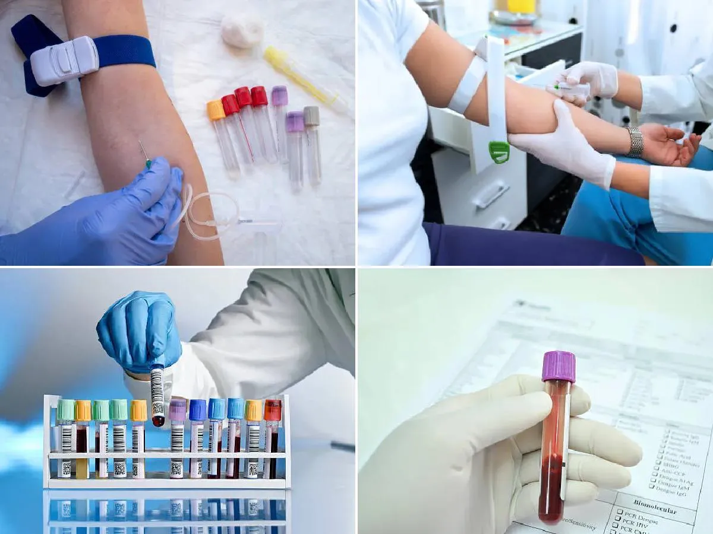
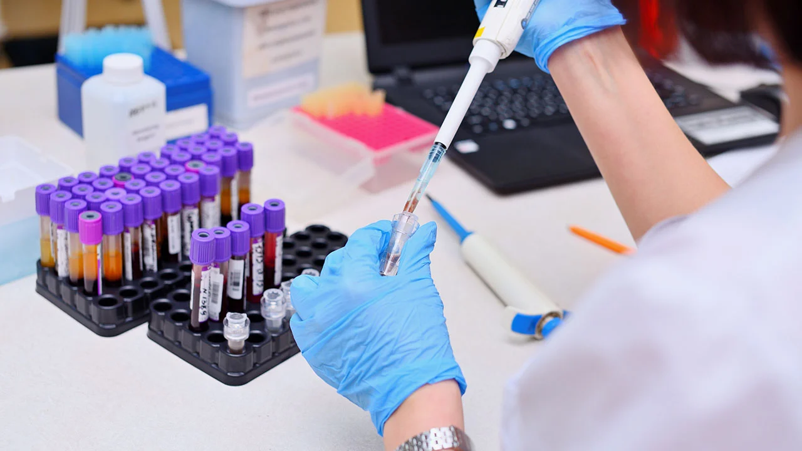

Nuestra Historia
El 14 de Noviembre del 2014 se comenzó con un proyecto de laboratorio bioquímico desde la mirada empresarial. Para desarrollar este propósito los pilares siempre han sido: Capacitación continua, Actitud de servicio, Desarrollo tecnológico e Innovación.
GenBio ha sido pensado, creado y desarrollado como un espacio en donde comulguen las vocaciones. Y así es, ya que el 80% de nuestro día a día lo invertimos en este maravilloso proyecto. Hemos trabajado muy duro para desarrollar un servicio bioquímico especializado e integral.
En el laboratorio se analizan y obtienen múltiples muestras biológicas. Entre las más comunes se encuentran, por ejemplo, la sangre, la orina, el líquido cefalorraquídeo, el líquido sinovial, materia fecal, entre otras muestras biológicas. No obstante, el trabajo de análisis tiene una serie de fases que se deben realizar por orden, y que están relacionadas entre sí.
En este sentido, la primera de ellas es la fase preanalítica. Se trata de la etapa previa a la realización de un análisis de laboratorio. Así, abarca el periodo desde que el médico de asistencia llena la solicitud de la prueba hasta que llega al lugar donde será analizada.
Es decir, en un primero lugar, la solicitud del análisis se efectúa por el doctor y, generalmente, tiene que rellenar un formulario de papel que el paciente lleva en la mano. Posteriormente, se efectúa la extracción de sangre o de la muestra biológica que se necesite del paciente. Una solicitud puede tener pruebas que se realizan en distintos laboratorios por eso es importante que la separación y el envío de las pruebas se pueda realizar en el punto de extracción.
Después de ello, las muestras se llevan al laboratorio. Si este se encuentra lejos de los puntos de extracción se suelen usar neveras para transportar las muestras. Al llegar al laboratorio, las muestras se separan y se clasifican.
Es entonces cuando llegamos a la fase analítica, que cubre el proceso del análisis, así como las medidas de aseguramiento de la calidad.
En esta fase se realizan las pruebas solicitadas a los análisis, se obtiene el resultado y se valida e interpreta por los especialistas en el laboratorio. Generalmente, las pruebas se pueden dividir en tres grupos: pruebas que se realizan en autoanalizadores, las que se realizan por procedimientos manuales y las que se derivan a otros laboratorios.
Una vez obtenidos los resultados, los técnicos de laboratorio realizan la validación técnica, que, básicamente, consiste en dar por buenos los análisis. Tras ello, se pasa a la fase postanalítica, que comienza en el momento en el que se informan los resultados obtenidos, así como los mecanismos de registro y entrega y su interpretación. Cabe destacar que toda la información generada en el laboratorio puede ser consultada y analizada por los gestores del centro y por los responsables del laboratorio.
